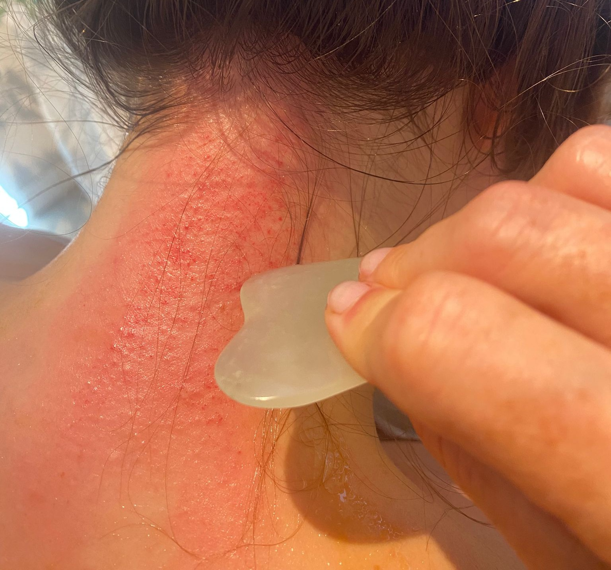
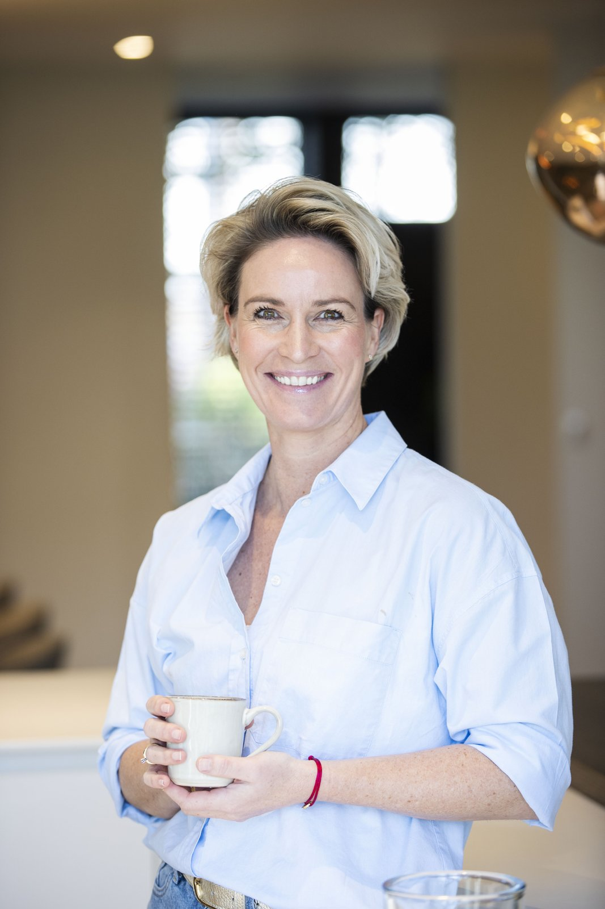
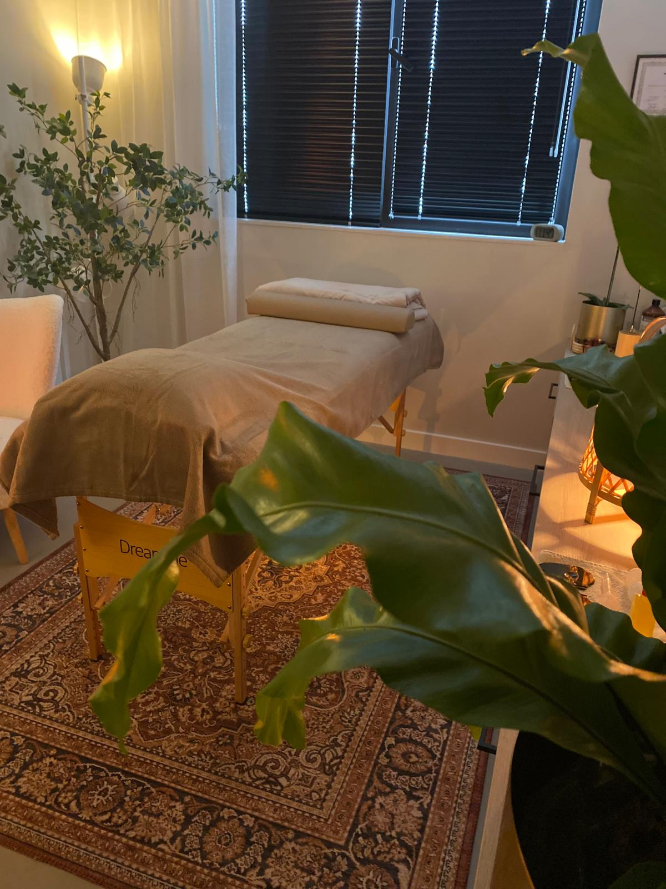
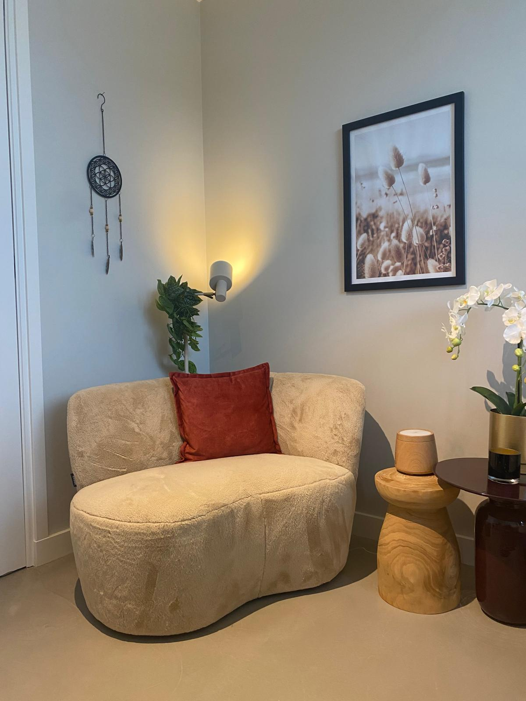

Een gespannen lijf. Een druk hoofd. Weinig energie. Herkenbaar?
Bij Essentia Holistic Care kijk ik verder dan alleen de klacht — naar wat er in jou als geheel om aandacht vraagt. Via guasha, via bewustzijnscoaching, of allebei.
Je bent hier waarschijnlijk niet toevallig.
Die nekpijn die niet meer weggaat, of een bonkende hoofdpijn. Gedachten die 's avonds nog doorgaan, of stemmingen die met je op de loop gaan. De ene dag valt het mee, de andere dag trekt het de hele avond aan je aandacht. Bij een fysieke klacht ga je naar de fysio. Bij iets mentaals of emotioneels praat je een keer per week met een psycholoog. Het helpt een tijdje — tot er weer een nieuwe of andere klacht opduikt, en het oplossen weer helemaal van voren af aan begint.
Bij Essentia gaat het om de essentie.
De naam is geen toeval. Bij Essentia gaat het altijd om de kern: van je vraag, je klacht, en van wie je bent.
Vanuit die kern werk ik met twee ingangen die elkaar versterken. Guasha brengt het lichaam terug in beweging: met een gladde steen werk ik gericht over de huid, waardoor vastzittende spanning en stagnatie naar de oppervlakte komen. Bewegingsbeperkingen lossen op, pijn verdwijnt — en de kleine rode vlekjes die daarbij soms verschijnen (sha) zijn het zichtbare bewijs dat er iets is losgekomen; ze trekken vanzelf weer weg binnen enkele dagen. Coaching brengt de geest terug in helderheid: belemmerende patronen worden doorbroken. Samen brengen ze lichaam en geest weer op één lijn.
Essentia Holistic Care onderzoekt klachten en problemen daarom altijd vanuit een holistische kijk op de mens. Vind je dat interessant? Dan ben je hier aan het juiste adres.

Sha — het zichtbare bewijs dat vastzittende spanning is losgekomen.
Kies wat het meest bij jou past.
Twijfel je? Dat hoeft niet erg te zijn — ik help je graag de juiste ingang kiezen. Stuur gerust een appje als je er niet uitkomt.
Druk hoofd, gespannen nek en rug
Malende gedachten. Een hoofd dat niet uitzet. Spanning die al weken in je nek en rug zit. Een hoofd/nek/rug-behandeling brengt je zenuwstelsel terug in rust — en soms is dat pas het begin.
Bekijk lichaamsbehandelingen → GezichtGewoon heerlijk ontspannen
Geen zware klacht — gewoon zin om te genieten en helemaal tot rust te komen. Dan is dit 'm. Zacht, verzorgend, en een uurtje dat volledig van jou is.
Bekijk gezichtsbehandeling → DoorbraakcoachingVastzittende patronen, geen richting
Je functioneert prima, op papier. Maar voelt het ook zo vrij als het eruitziet? Doorbraakcoaching helpt je ontdekken wat er gebeurt als je stopt met vechten tegen jezelf.
Bekijk coaching →Waar het lichaam loslaat wat het hoofd vasthoudt.
Guasha kijkt verder dan het symptoom en brengt onderliggende spanning naar de oppervlakte, zodat je lichaam écht kan herstellen.

- Nek- en schouderklachten
- Spanningshoofdpijn
- Lage rugpijn
- Ischias / hernia
- Frozen shoulder
- Tennisarm / RSI
- Kniepijn en slijtage
- Zware, vermoeide benen
- Slechte doorbloeding
- Terugkerende klachten na fysio
Kies je behandeling
Twijfel je, of heb je een vraag? Stuur me gerust een berichtje.
Totale ontspanning van lichaam én geest.
Een zachte, opwaartse guasha-massage langs de meridianen van je gezicht — brengt doorbloeding en lymfestroom op gang, en laat spanning in kaak en voorhoofd wegsmelten.

- Gespannen kaak
- Vermoeide uitstraling
- Doffe huid
- Wallen en zwelling
- Spanning rond de ogen
- Fijne lijntjes
Kies je behandeling
Zit de spanning meer in je hoofd zelf — malende gedachten, een hoofd dat niet uitzet — dan past een hoofd/nek/rug-behandeling vaak beter, eventueel aangevuld met coaching.
Doorbreek wat je groei in de weg staat.
Iedereen ontwikkelt patronen — vaste manieren van denken, voelen en reageren die ooit een functie hadden. Ze beschermden je, hielpen je overleven, zorgden dat je erbij hoorde. Maar een patroon dat je vroeger diende, kan je nu juist beperken: het kost energie, houdt je klein, en zorgt voor een voortdurende strijd met jezelf en het leven.
In dit traject maak je die patronen zichtbaar, doorbreek je wat niet meer helpt, en leer en ervaar je een nieuwe manier van zijn. Zodat je weer toegang krijgt tot je volle potentieel — in plaats van beperkt te worden door wat ooit nodig was.

- Vastzittende patronen
- Innerlijke strijd
- Beperkende overtuigingen
- Irritatie of boosheid
- Stemmingswisselingen
- Moeite met richting kiezen
- Moeizame relatie met jezelf of anderen
- Succesvol maar niet gelukkig
Het traject
Wat is doorbraakcoaching?
Een patroon is een vaste manier van denken, voelen of reageren die je op enig moment hebt aangeleerd — vaak al vroeg in je leven. Ooit had het een functie: het beschermde je, hielp je overleven, zorgde dat je erbij hoorde. Maar wat je toen diende, kan je nu beperken. Het kost energie, houdt je klein, en zorgt voor een voortdurende strijd — met jezelf, met anderen, met het leven.
Herkenbaar: je functioneert, misschien zelfs goed. Maar van binnen voel je onrust, twijfel, of een gevoel dat je jezelf tekortdoet. Kleine dingen raken je harder dan zou moeten. Je merkt dat je jezelf afsluit, of juist te veel geeft, zonder dat je dat bewust kiest.
Het doel
Niet dat je harder wordt of minder voelt. Wel dat je steeds beter de weg terug naar jezelf kent — zodat er, ook onder druk, weer ruimte ontstaat voor helderheid en bewust kiezen. Alleen praten over het probleem verandert niets. Mij zomaar geloven trouwens ook niet. Je gaat experimenteren met wat ik zeg — pas dan worden jouw eigen ervaringen leidend voor jouw verandering. Dát beklijft. Een inzicht alleen, niet.
Wat je kunt verwachten
We werken in vier stappen, met een vast ritme per sessie:
1. Bewust worden. Het patroon wordt zichtbaar — niet als tekortkoming, maar als iets wat ooit logisch was.
2. Doorbreken. Je leert het patroon herkennen op het moment zelf, in plaats van het te bestrijden.
3. Ervaren. Je voelt in je lichaam hoe het anders kan — pas dan landt verandering echt.
4. Implementeren. Je neemt het mee je dagelijks leven in, zodat het blijft hangen, ook onder druk.
De resultaten
Minder strijd, meer ruimte. Je krijgt weer toegang tot wie je in essentie bent — in plaats van dat een oud patroon daar nog tussen staat.
Essentia Holistic Care — gezondheid begint bij innerlijke stabiliteit.
Het doel is niet dat je mij nodig blijft hebben.
Effectief en duurzaam herstel — dat vind ik het belangrijkste van alles. Dat je zelf weer in staat bent om te helen, om gezond te blijven, om te voelen wanneer iets vraagt om aandacht. Niet dat je van mij afhankelijk wordt.
Een ontspannen behandeling, gewoon omdat je jezelf dat cadeau wilt doen? Altijd welkom — daar hoeft niets zwaars aan te hangen. Maar als het bij symptomen wegmasseren blijft, terwijl er onder die spanning iets ligt dat om echte aandacht vraagt, dan gun ik je meer dan dat. Dan gun ik je de kans om daadwerkelijk de kern aan te pakken — voor innerlijke rust en ontspanning die blijft, in plaats dat er telkens spanning, onrust en stress terugkomt.

Ik weet hoe het voelt om op je eigen krant te zitten.
Zonder dat je het doorhebt. Jarenlang liep ik rond met een onzeker gevoel, negatieve gedachtes, een zeurende onderrug, spierspanning, peesontstekingen, een opgejaagd gevoel. Ik zag risico's waar ik uitdagingen had kunnen zien. Ik dacht dat ik dat gewoon was. Ik was toen toch al begin 40. De grote onwetende, dat was ik wel. Tot ik ontdekte dat het niet ging om wie ik was — maar om waar ik van was afgedreven.
Het sluipt erin. Niet met een groot moment, maar geleidelijk. Ineens merk je gedachten op die er eerst niet waren. Gevoelens die je niet herkent. Klachten die vroeger nooit speelden en nu ineens wel.
En dan gaan we automatisch naar de klacht kijken. Want klachten zijn de taal van ons lichaam — een aanhoudende hoofdpijn, een vastzittende rug, het piekeren dat maar niet stopt. We proberen het op te lossen, weg te krijgen. Logisch, want het voelt vervelend.
Maar precies daardoor ontglipt ons de kans op iets essentieels. De vraag die er eigenlijk toe doet, blijft onbeantwoord: waarin ben ik niet eerlijk tegen mezelf? Wat ben ik aan het ontkennen?
Want klachten staan zelden op zichzelf. Ze zijn een signaal dat we van koers zijn geraakt — een beetje, of soms zeer ernstig. We drijven onbewust af, met alle gevolgen van dien: scheidingen, ziekmeldingen, verslavingen, burn-outs die steeds jonger toeslaan, overspannen kinderen. We vluchten in werk, in perfectionisme, in van alles — om maar niet te hoeven voelen wat er onder ligt.
Hoe ik daar zelf uitkwam
In 2020 volgde ik de opleiding tot Holistische Doorbraak Coach. Niet vanuit nieuwsgierigheid alleen, maar omdat ik zelf door het afvoerputje was gegaan en mezelf opnieuw moest uitvinden. Ik leerde mijn kompas opnieuw ijken — en ontdekte dat dat een vaardigheid is die je kunt leren. Iets wat de meesten van ons als kind nooit hebben meegekregen, maar wat je als volwassen mens wél kunt ontwikkelen.
Ik doorbreek nog dagelijks patronen vanuit mijn oude systeem. Het verschil is dat ik het nu sneller zie, voel wat het met me doet, en steeds vaker kies om het anders te doen.
Hoe ik nu werk
Ik help mensen niet alleen om van de klacht af te komen. Ik trek — veilig en vanuit liefde — de krant onder je vandaan. Zodat je met heldere ogen kunt zien, met een open hart kunt voelen, en met een kalme geest kunt begrijpen wat er werkelijk speelt.
Dat doe ik in drie lagen: lichaam, emotie, bewustzijn. Guasha is de lichamelijke ingang — het maakt voelbaar wat je hoofd nog niet toegeeft. Coaching brengt de verdieping: helderheid, richting, en de vaardigheden om je kompas blijvend bij te stellen.
Dat zorgt voor rust. Voor ruimte. Voor regie. Voor richting.
Voor wie ik dit doe
Voor mensen die klachten ervaren, maar nieuwsgierig zijn om een laag dieper te kijken in zichzelf. Naar hun eigen kompas, hun functioneren. Die ergens voelen dat er iets moet veranderen waardoor het beter wordt, maar stagneren omdat ze niet weten hoe of waar te beginnen.
Wat ik je gun
Ik gun je dat je eerlijk kunt zijn naar jezelf. Dat je de waarheid onder ogen durft te komen, voorbij alle illusies die je jarenlang staande hebben gehouden.
Je hoeft niet meteen te weten welke weg dat is. Je kunt beginnen met guasha — met mij leren kennen, ervaren wat er gebeurt als je lichaam eindelijk mag loslaten. Dat brengt je misschien vanzelf een stapje dichter bij coaching. Of je voelt meteen dat je dieper wilt. Welke route ook goed voelt — begin gewoon.
Benieuwd wat er op jouw krant staat?
Plan je afspraak5,0 sterren van cliënten uit Best en omgeving.
"Vandaag een Total Release en een Gezichtsbehandeling guasha mogen ontvangen. Die laatste is indien mogelijk nog ontspannender. Het is nergens pijnlijk, je voelt een heerlijke zachte druk en een diepe ontspanning. Carine geeft de guasha behandeling met oprechte aandacht en warme energie. Heel fijn!"
"Ik kwam bij Carine op een moment dat ik hoog in mijn emoties zat en niet echt rationeel aan het denken was. Maar Carine wist precies wat het kind in mij nodig had — wist ze me tot rust te brengen, waardoor ik weer naar binnen kon keren en kon voelen dat de kracht en macht uiteindelijk bij mijzelf ligt. Carine straalt liefde, vertrouwen en warmte uit."
"Wat een fijne ervaring heb ik gehad bij Carine. Carine is een hele fijne, lieve, warme vrouw die je welkom heet in haar fijne praktijk aan huis, ze luistert, stelt je vragen en deelt haar kennis met je. De behandeling zelf was nieuw voor mij, maar Carine heeft mij er stap voor stap doorheen begeleid. Stop met twijfelen! Echt een aanrader en een super fijne ervaring! Dankjewel."
"Carine is heel professioneel, warm en hartelijk. Alles is altijd goed verzorgd en ze luistert met een open hart en oprechte interesse. Of je nu coaching bij haar volgt of een guasha behandeling, bij haar ben je in goede handen."
"Bijzonder! Niet zomaar een lichamelijke behandeling. Door een onverwachte open vraag te combineren met de guasha neemt Carine je mee in een prachtige ervaring. Ik heb spieren gevoeld waarvan ik niet eens wist dat ik ze had. Aanrader!"
"De guasha behandelingen hebben een positieve bijdrage gehad aan het herstel van mijn burn-outklachten en overprikkeling van mijn zenuwstelsel. Daarnaast heb ik veel baat gehad bij de vakkundige begeleiding van Carine. Ik kan het iedereen aanraden."
"Ik heb Carine leren kennen als een lieve, warme vrouw die weet waar ze over praat en vol passie haar vak beoefent. Loop je ergens tegenaan, dan ben je bij haar op het juiste adres om samen op zoek te gaan naar de verandering die je nodig hebt."
"Betrouwbaar, eerlijk, behulpzaam, intelligent, kennis van zaken, geduldig en goed geschoold — altijd het juiste advies om je verder te helpen. Bij Carine zit je goed als je het zelf even niet meer weet."
"Ik wil je bedanken voor alle sessies die we gedaan hebben. Wonderlijk hoe het me hielp. Ik heb weer positieve energie voor de mensen en de dingen om me heen!"